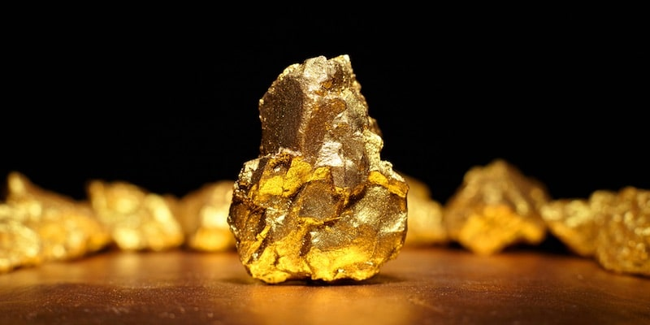

El oro es un metal de color amarillo brillante. Es muy denso, maleable y dúctil. Resiste la corrosión y no se oxida fácilmente, por lo que mantiene su brillo durante mucho tiempo.
El oro no es un nutriente. En algunos lugares se utiliza oro comestible en pequeñas cantidades para decorar postres y bebidas.
Su símbolo Au proviene de la palabra latina aurum. Es tan maleable que puede transformarse en láminas extremadamente finas.